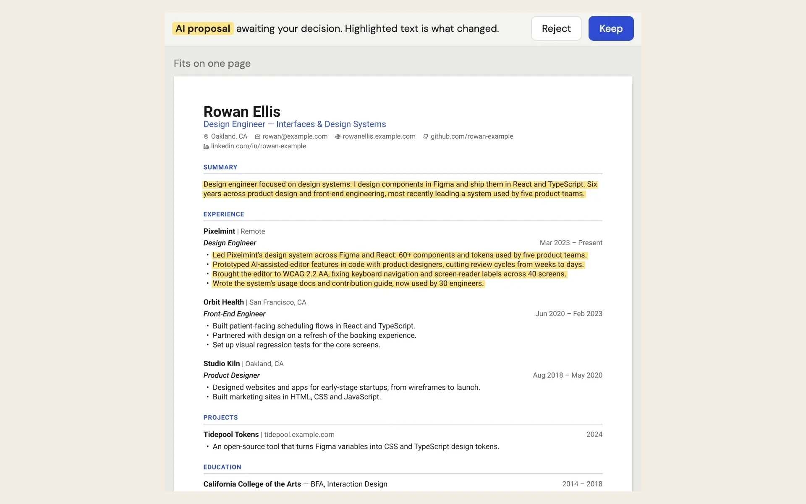
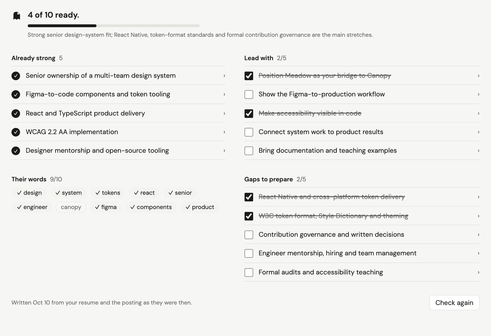
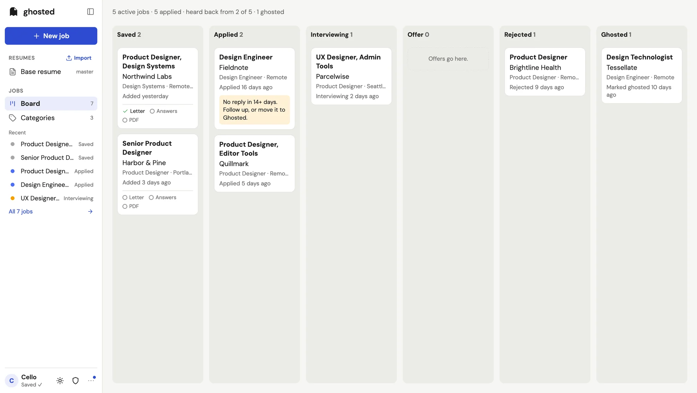

Case study
Tokens, component guidance and AI-assisted implementation, in a live resume you edit by chatting. Every AI change arrives as a yellow proposal you keep or reject. In private beta, shaped by its testers since day one.
- Problem
- Job applications are repetitive and high-stakes. An AI can make tailoring a resume much faster, but only if you can see exactly what it changed and undo any of it.
- Role
- Product designer and owner. I set the flows, the product model, the brand, the design system, and every call about where the AI stops. Coding agents built most of it from my specs and decisions.
- Key decision
- Every AI change is a proposal, highlighted in yellow on the real page for the person to keep or reject. Yellow means only that, and the design system is built around protecting that one rule.
- Shipped
- Live at ghosted.cello.design in private beta since October 8, 2026, with 70 production releases in its first four days. A design system of 59 primitive and 43 semantic color tokens, eight components in code, and checks that keep coding agents inside it.
The Product: A Resume You Can Talk To
Ghosted is built around one surface: a live resume canvas with a chat beside it. You ask for a change, and the change shows up on the page in yellow.

- A live canvas. The resume is drawn in the browser by Typst, and the PDF comes from the same compiler, so what you see is what you download. An edit re-renders in about 7 ms.
- Proposals, not edits. Every change the agent makes is highlighted and saved as a version: who made it, when, and why. Keep it, Reject it, or Edit it myself. Undo and Restore only move a pointer, so nothing is ever deleted.
- Click any line to fix it yourself. Clicking a line on the rendered page opens the edit form at that exact field. When the AI misses twice in a row, the chat says so and points there instead of making you argue with it.
Before You Apply: Fit And Research
Every tailored job gets a Fit report, written by the same AI call that tailors the resume.
Fit has to be checkable, too. Every “already strong” point cites a line, and code looks for that line on the job’s resume and the base. Anything it can’t find is flagged, never hidden.

Testing With Real Testers
Ghosted went live to testers on October 8. The first tester used it that day, and her job notes were open in an interview the next morning. From then on, testers set the order of work.

Sketch: the full case study continues here (the design system, the first-resume interview, identity and motion, the focus pass, by the numbers). The settled still stays put through all of it; after 20–30 s without input it may breathe, very slightly, for about a minute.
What I Learned
Adding AI to a product is easy. The design work is deciding how much the model gets to do, and making sure the person can see, judge and undo every bit of it.
End of Ghosted